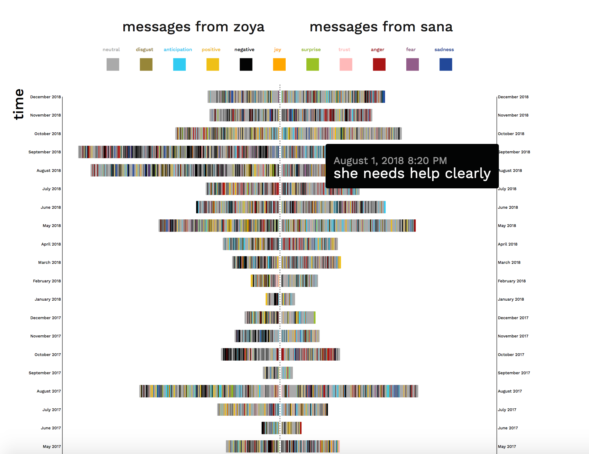
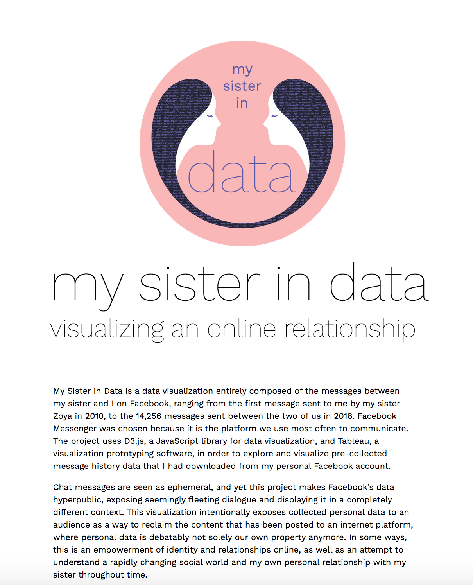
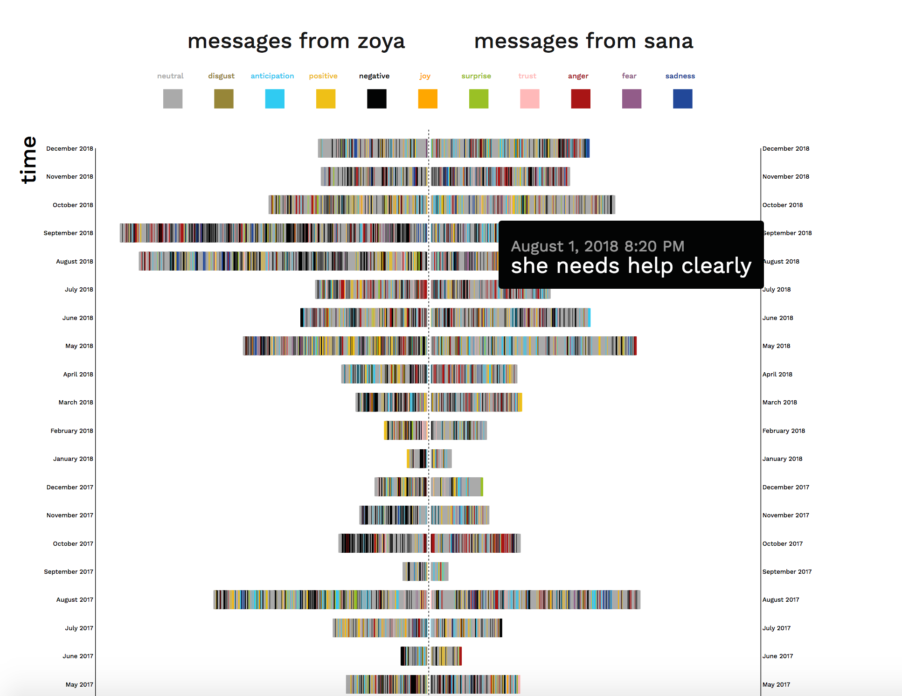
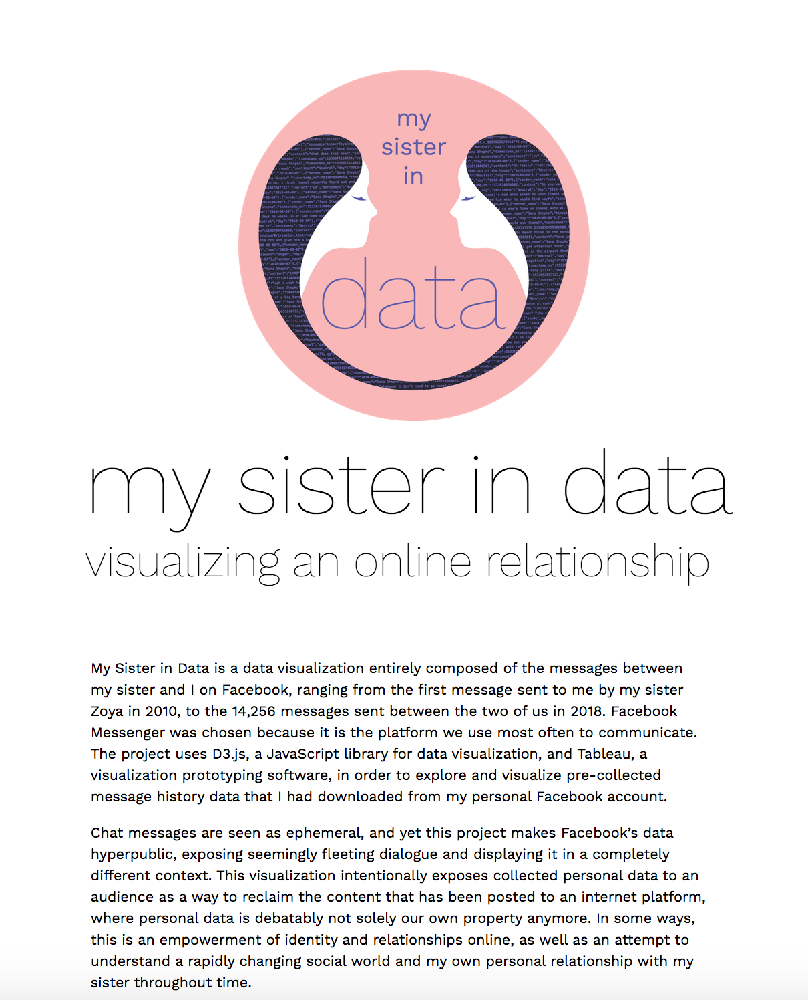

My Sister in Data is a two-year graduate thesis project that I created for the Master's in Digital Futures program at OCAD University, under the advisement of professors Ali Qadeer and Isabel Meirelles.
The project includes an interactive data visualization out of Facebook messages between my sister and I from 2010-2019. The visualization is embedded on a webpage, and visitors can hover over a message to read its contents. It shows the growth of communication over time, and shows the emotional categories of messages through use of color.
The purpose of this project was 1. to explore how changing time and distance affected the ways in which Facebook was used as a tool to help maintain the relationship between my sister and I, and 2. to expose seemingly private conversations to an audience as a way to reclaim online content that is debatably not our own to begin with.
This thesis speaks to a desire to comprehend a changing, technologically-enhanced social world and the relationships contained within it.
This project uses a research through design (RtD) methodology, which is a form of research that acknowledges creation as a form of discovery. RtD is used in tandem with methods from autoethnography, allowing the particular case of personal data used in this project to be contextualized in the reflective methods of an autoethnographic approach. I also used data visualization methods outlined by Ben Fry in his book Visualizing Data (2008), which involved:
In addition, I used the following autoethnographic methods as part of the research process:
My first step was to download the message history dataset from Facebook and to filter out mentions of other people. My next step was to understand the message data file; what information it contained, what parameters could highlight meaningful insights, and what patterns I might be able to find in the data. In order to begin experimenting and understanding the dataset, I chose to use Tableau, a data visualization software that enables creating visualizations out of datasets within the Tableau interface without requiring programming knowledge. Using Tableau’s bar chart visualization, I discovered the message text content that was most frequently sent between me and my sister.
Using the same concept of visualizing the most frequently sent messages, I iterated a data sketch as a clustered bubble chart. The different colours show who sent the message.
As my progression in creating visualizations with Tableau continued, I wanted to see if I could show the distribution of high frequency message content through time. Temporal indications are important in the presentation of the prototype, since I am interested in seeing the way that specific moments in time (such as the point when I move away from home in 2017) might appear in data.
Through the design phase, I found that being able to view individual messages would highlight the publicity of internet data, as well as helping to enhance the answer to my first research question on how visualization can demonstrate social media’s use as a tool to maintain my relationship with Zoya over time and distance. I also found that using time as an axis would help contextualize the visualization and show the growth in messages over time. Finally, with the help of Greice Mariano, a post-doctorate researcher and colleague from the Visual Analytics Lab, we were able to assign sentiment values to each message. This allowed me to visualize the emotions of each message using colour.
I also ultimately decided to use a stacked histogram to visualize the data. I had previously explored a clustered bubble chart, and a mirrored area chart, but the issues with the bubble chart was that it didn't conceptualize linear time very accurately, and the issue with the area chart was that functionally it wouldn't be able to show individual messages.
The decision to assign these colors to certain sentiments were guided by the research article "The Colors of Emotion" by D'Andrade. This research found that darker, low saturated colors were associated with negative emotions while bright and high saturated colors with positive emotions. The implementation of sentiments for each message was important, as it allowed me to create a toggle user interaction and add a more intimate understanding of the data.
For the Digital Futures graduate thesis exhibition, I ran the data visualization website off a local server on my computer and connected it to a large monitor. I felt it would be important to be able to see the visualization all at once rather than to be limited to scrolling through it on the screen, so I created two large posters, split into messages from Zoya and messages from me, that showed the entire span of messages over time. These posters included guiding annotations above each axes and above the sentiment legend to help lead a viewer through understanding how to read the chart. Each time frame in the time axes had an annotation, summarizing the big events of that time and what the gist of the message data at that time was about. This allowed the project to be more contextualized in the lived experiences of Zoya and I rather than an abstract visualization.
I found that the installation of this prototype and watching people interact with the interface led to new insights. Many people mentioned that they felt voyeuristic reading through the messages, and as if they were violating my privacy. This was interesting to me, as I think I have desensitized myself at this point so much that allowing private messages between my sister and I to be accessed by strangers doesn't phase me anymore.


 



The research shows, most importantly, that there is notable increase in interaction over time. I believe that this helps to partially answer my first research question, as this suggests that social media is indeed used to maintain the relationship. Ultimately, the process of researching this topic has been insightful, heartwarming, and also bittersweet for me. My homesickness is sometimes alleviated, and sometimes heightened as I work through the message dataset. I worry that my own experience is not always easily translatable to an audience outside of my perspective. However, this is something that I have grown to be aware of, and hopefully I will have opportunities to improve the communication of my perspective in the future.